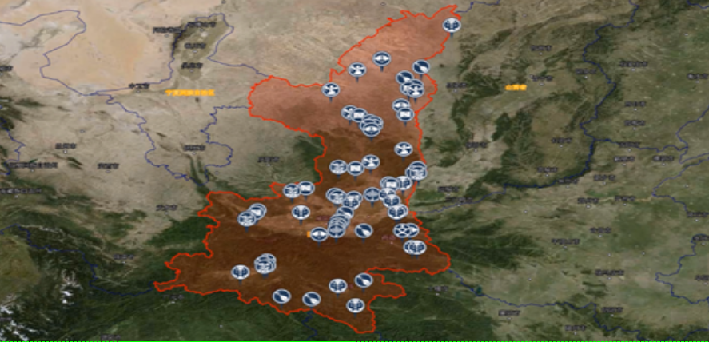
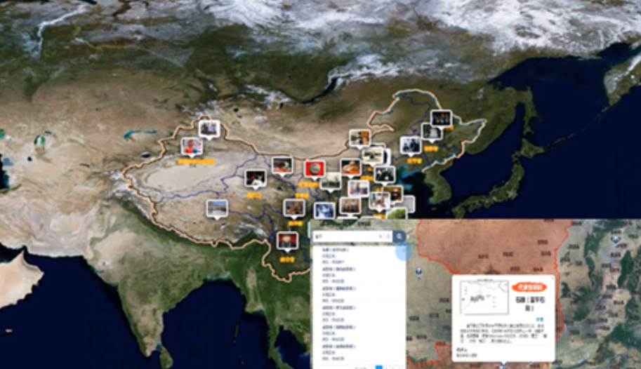
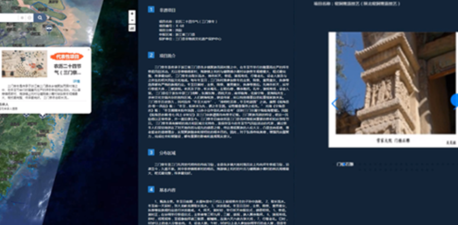
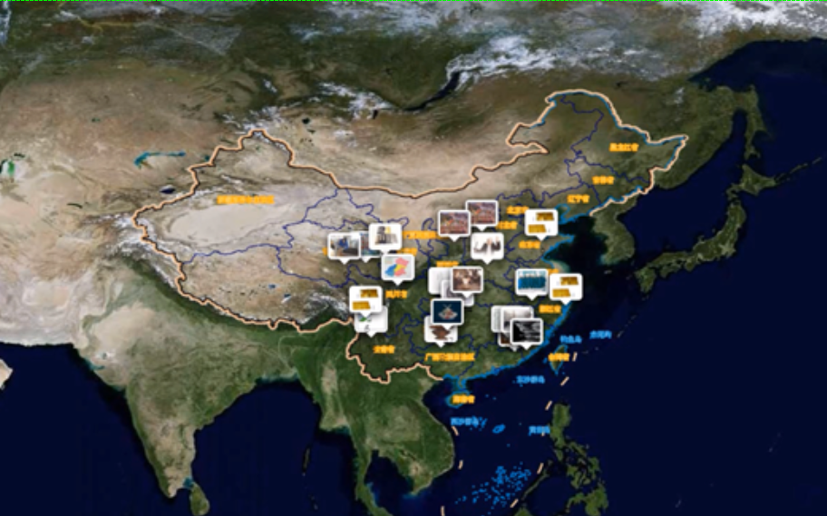
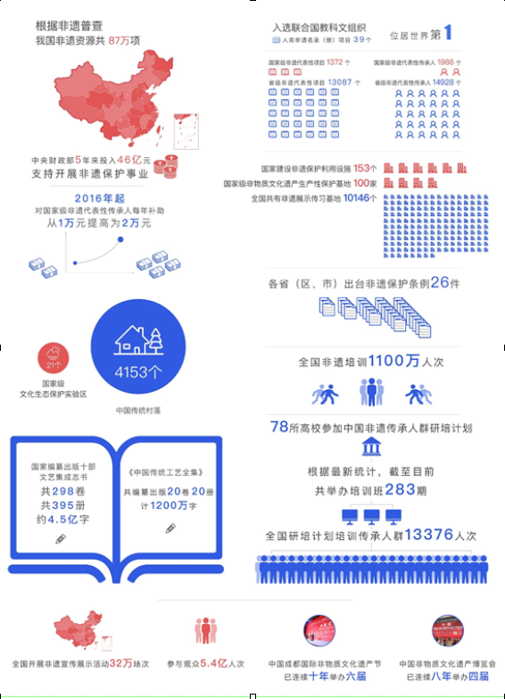

中华非物质文化遗产，源于民间生活习俗的传承和积累，分散在全国各地，极具地方特色。犹如一部部“活历史”，动态诉说着各地文化乡愁的美好情愫。但也因为非遗大多为口耳相传，疏于记录，所以常常转瞬即逝、不可再生。五千年绵延不断的华夏文明，虽然创造了辉煌灿烂的文化智慧，却也面临着许多传统技艺日渐消亡的困境。
十八大以来，党中央提高了对中华优秀传统文化的重视，将其作为治国理政的重要思想文化资源，并明确要提升非物质文化遗产保护利用水平。国务院建立国家级非物质文化遗产代表性项目名录，批准公布了四批共1372项国家级非遗代表性项目。其中39个项目入选联合国教科文组织人类非遗名录/册，是入选项目最多的国家。
我国是非遗资源大国，非遗连结着我们的生活。非遗数据的采集和收录，以图、文、影像等多种形式保存非遗基础信息，通过地区、传承人、非遗类别、收录批次、生态保护区等多维度关联，总体展现国家非遗传承工作的概况，构建起国家非遗资源的立体检索模型。
现代科技在影响我们生活的同时，也影响着非遗和我们传达的方式。非遗地图，基于地理位置，完整、直观、立体的再现全国和各地方国家级非遗传承工作。为非遗资源的利用提供了开放的扩展空间：
采用熟悉的地图显示，便于方便、直观的定位各省市地区的国家级非遗热度。
直接检索非遗名称、或通过地区、传承人、非遗类别、收录批次、生态保护区等维度，检索出相关非遗的图文影像等全数据信息。
 基于国家非遗地图资源，各地方政府可个性化定制自己的非遗地图，并扩展传承推广活动。汇聚各地方之力，激活国家非遗传承的扩展进程。
基于国家非遗地图资源，各地方政府可个性化定制自己的非遗地图，并扩展传承推广活动。汇聚各地方之力，激活国家非遗传承的扩展进程。
非遗地图，汇聚了中国所有的国家级非遗项目的传承热点。从传承到创新，我们一直在探索。非遗地图现阶段数据仍为中文。